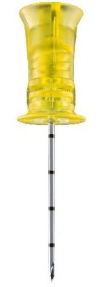
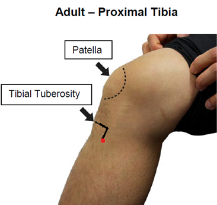
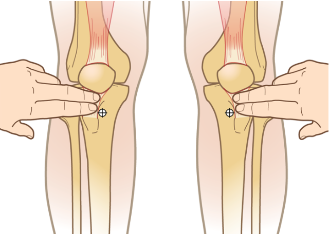
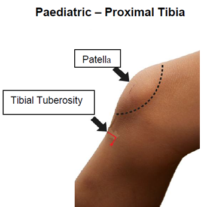
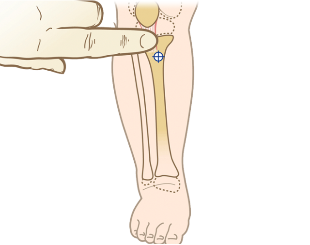
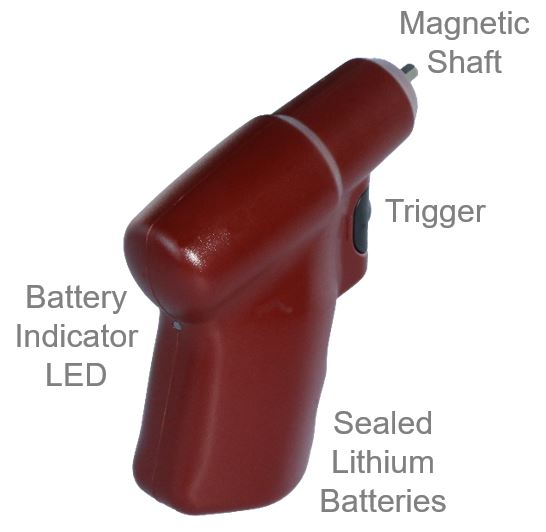

Cannulation of the intraosseous space using EZ-IO:
- Cardiac arrest:
- First line for paediatrics
- Consideration for first line in traumatic cardiac arrest
- Second line cardiac arrest management for adults following at least one failed intravenous (IV) access attempt, unless unable to locate appropriate site for IV access.
- All other circumstances:
- Where immediate medication or fluid administration is required following at least one failed IV access attempt when unable to administer by any other appropriate route.
- Fracture to the targeted bone.
- IO within last 48 hours in the targeted bone.
- Inability to locate landmarks or excessive tissue.
- Prosthetic limb or joint (near insertion point).
- Directly over, or distal to burns, cellulitis, infection or injury
Key Aseptic Terms for Intraosseous Access
- Key Sites:
- Insertion site of IO
- Key Parts:
- IO needle, Syringe
- EZ-Stabiliser
- Cleaning Swab
- Bung
- Extension kit
- Utilise proximal humerus insertion site if suspicion of pelvic fracture or abdominal trauma.
- Proximal humerus insertion is preferred in all non-paediatric cardiac arrest as opposed to proximal tibia.
- Preference should be for right proximal humerus where appropriate for ease of access during transport.
- Consider use of analgesia for conscious or post-ROSC patients.
- Avoid site if previous orthopaedic procedure or proximal fracture on same limb.
- Drug efficacy is considered similar between IO and IV routes.
- Patients with a chlorhexidine sensitivity/allergy, use 10% povidone-iodine swab
EZ-IO Intraosseous Access
Prepare the patient
- Explain procedure to patient and gain consent as appropriate
Prepare the Equipment
- IO needle appropriately sized for location and patient
- EZ-IO driver
- EZ–Stabiliser
- EZ-connect extension set
- If available: Pre-filled Sodium Chloride 0.9% if available
- Otherwise: 10mL syringe with 10mL of Sodium Chloride 0.9% drawn up.
- Prime with extension set with 0.9% Sodium Chloride or Lignocaine as required.
- 2% CHG with 70% alcohol swab or 10% povidone-iodine swab as required
- Sharps container
- ONLY OPEN EQUIPMENT WHEN ABOUT TO PERFORM SKILL.
DO NOT PRE-OPEN.
- ONLY OPEN EQUIPMENT WHEN ABOUT TO PERFORM SKILL.
Prepare the site
- Select appropriate site, clean with cleaning wipe if visibly soiled.
- Utilise patient positioning to help identify all necessary landmarks as required.
- Once site located, confirm insertion position with second officer
- Perform hand hygiene, don fresh gloves
- Thoroughly clean the site with the appropriate antiseptic swab by wiping the swab in a cross-hatch manner across the patients skin for 30 seconds and allow to air dry. (If patient is time critical document if unable to wait for 30 seconds)
- DO NOT TOUCH OR PALPATE THE SITE AGAIN
Proximal Tibial insertion
- Attach appropriately sized needle on to EZ-IO driver, ensuring needle is securely seated on driver.
- Position needle 90 o to bone
- Push until needle tip touches bone, ensuring at least one black line is visible on needle (5mm).
- Penetrate the bone cortex by squeezing the drivers trigger and applying gentle pressure
- Release trigger and stop insertion when a sudden ‘give’ or ‘pop’ is felt upon entry in to the medullary space
- Remove the driver and the stylet
- Dispose of the sharps in the sharps container
- Secure catheter with EZ-Stabilisor
- Consider aspirating blood/marrow to assist in confirming placement, however an inability to aspirate blood or marrow does not indicate a failed insertion
- Attach primed EZ-Connect extension set
- Gently flush catheter with 5-10mL of normal saline 0.9% (2-5mL for infants)
Proximal Humerus insertion (ADULT ONLY)
- Attach appropriately sized needle on to EZ-IO driver, ensuring needle is securely seated on driver.
- Position needle 90 o to bone
- Push until needle tip touches bone, ensuring at least one black line is visible on needle (5mm).
- Penetrate the bone cortex by squeezing the drivers trigger and applying gentle pressure
- Release trigger and stop insertion when desired depth is achieved, typically 1-2cm beyond ‘give’
- Remove the driver and the stylet
- Dispose of the sharps in the sharps container
- Secure catheter with EZ-Stabilisor
- Consider aspirating blood/marrow to assist in confirming placement, however and inability to aspirate blood or marrow does not indicate a failed insertion
- Attach primed EZ-Connect extension set
- Gently flush catheter with 5-10mL of Sodium Chlordie 0.9%
- Once correct placement confirmed, attempt to maintain internal rotation of humerus where possible, to prevent dislodgement (application of LUCAS may interfere with positioning).
Using cannula
- Prior to administration of medications, fluids or flushes, the bung requires preparation:
- Using appropriate cleaning swab, wipe and clean the bung and syringe for 15 seconds
- Allow to air dry
- Administer medication, fluids or flush.
- If utilising pre-drawn single use Sodium Chloride 0.9%, then cleaning of syringe not required unless contaminated/cap has been removed prior to flush.
.png.html){kind=link}
.png.html){kind=link}
Needle Size Selection
This requires clinical judgement, taking into account the size of the bone and depth of overlying tissue. The following table is only a guide:
| Pink | 15 mm | Minimal tissue (e.g. infant / paediatric tibia) |
| Blue | 25 mm | Minimal tissue (e.g. adult / paediatric tibia) |
| Yellow | 45 mm | Excessive tissue (e.g. humeral head) |
Depth markers
The EZ-IO® Catheter is marked with black lines starting approximately 5 mm from the hub. This should be used as a “depth gauge” to to determine if the needle set is the correct length for the patient prior to powering the needle set past the outer cortex and into the medullary space. Indications that the needle set is not long enough include the following: the needle set does not reach bone or no black lines are visible above the skin with the tip of the needle set touching bone.
Site Selection
Proximal Humerus
- Place the patient's hand over the abdomen (elbow adducted and humerus internally rotated).
- Place the patient's hand over the abdomen (elbow adducted and humerus internally rotated).
- Palpate the insertion site 1 to 2cm above the surgical neck, into the greater tubercle (‘ball’ or humeral head).
- Once the insertion site has been prepared, insert the IO needle, angled slightly downwards and at 45° to the ground (horizontal plane).
Alternative method for siting humeral head for IO access
.png.html){kind=link}
.png.html){kind=link}
.png.html){kind=link}
.png.html){kind=link}
.png.html){kind=link}
Proximal Tibia
Adult or Large Paediatric Patient
- Extend leg out straight.
- Palpate the tibial tuberosity. Locate the medial plateau site by moving two finger widths below the tibial tuberosity and then two finger widths medial along the flat aspect of the tibia.
- Insert needle 90° to bone.


Newborn, Infant or Paediatric Patient
- Extend leg out straight.
- Palpate the tibial tuberosity. Locate the medial plateau site by moving one finger width below the tibial tuberosity and then one finger width medially along the flat aspect of the tibia.
- Insert needle 90° to bone.


- Ability to administer medications as per specific guidelines.
- Inability to administer medications or fluid through IO.
Potential complications of attempting intraosseous access:
- Compartment syndrome.
- Damage to paediatric growth plates.
- Local tissue infection.
- Misplacement.
- Osteomyelitis.
- Pain (particularly infusing fluid in the conscious patient).

Battery indicator
The drivers are equipped with a power indicator light that illuminates when the driver trigger is deployed. This light illuminates green when the battery has sufficient power and blinks red when the driver needs to be replaced.Manual insertion
Rotate clockwise/counter-clockwise while applying gentle, moderate, steady downward pressure without rocking the needle set. Allow rotation and pressure to penetrate the bone cortex, not excessive force. Stop insertion when a change in resistance is felt as a "give" or "pop" indicating entry to medullary space in pediatric patients. In adult patients, advance needle set approximately 1-2cm after entry into medullary space (felt as a change in resistance); in the proximal humerus for most adults, the needle set should be advanced 2 cm or until hub is flush or against the skin.
- Video demonstrating needle set selection for infants
- Video demonstrating proximal humeral infusion with fluoroscopy
- Video demonstrating proximal humeral site identification
- Video demonstrating proximal humeral site identification & IO placement
The Arrow EZ-IO® training app is available for download onto personal mobile devices:
| Settings | |
|---|---|
| Extended Care: | |
| Colour assist: | |
Ngo AS-Y, Oh JJ, Chen Y, Yong D, Ong MEH. Intraosseous vascular access in adults using the EZ-IO in an emergency department. International Journal of Emergency Medicine. 2009, 2(3): 155-60. http://dx.doi.org/10.1007/s12245-009-0116-9
Zhang Y, Zhu J, Liu Z, Gu L, Zhang W, Zhan H, et al. Intravenous versus intraosseous adrenaline administration in out-of-hospital cardiac arrest: A retrospective cohort study. Resuscitation Journal. 2020; 149:209-16. https://www.sciencedirect.com/science/article/pii/S0300957220300307
Clare S, Rowley S. Best practice skin antisepsis for insertion of peripheral catheters. British Journal of Nursing. 2021 Jan 14;30 (1):8-14
Barr N, Mason M, Clegg L, Randall F. Maintaining asepsis in paramedicine: a Delphi study: Asepsis in paramedicine. Australasian Journal of Paramedicine. 2022 Apr 13;19
Montez D, Puga T, Philbeck T. The science and fundamentals of intraosseous vascular access. Teleflex Incorporated. 2017. EZ-IO_Science_Fundamentals_MC-003266-Rev1-1.pdf (teleflex.com)
Australian Commission on Safety and Quality in Healthcare. NSQHS Standards Implementation guide for Action 3.11 Aseptic Technique. December 2022. https://www.safetyandquality.gov.au/sites/default/files/2022-01/nsqhs_standards_implementation_guide_for_action_3.11_aseptic_technqieu_-_december_2021.pdf
Document Control
Clinical Resources Website
St John Ambulance Western Australia Ltd (ABN 55 028 468 715) (St John WA) operates ambulance and other pre-hospital clinical services. St John WA’s Clinical Resources, including its Clinical Practice Guidelines (Clinical Resources), are intended for use by credentialed St John WA staff and volunteers when providing clinical care to patients for or on behalf of St John WA, within the St John WA Clinical Governance Framework, and only to the extent of the clinician’s authority to practice.
Other users – Terms of Use
The content of the St John WA Clinical Resources is provided for information purposes only and is not intended to serve as health, medical or treatment advice. Any user of this website agrees to be bound by these Terms of Use in their use of the Clinical Resources.
St John WA does not represent or warrant (whether express, implied, statutory, or otherwise) that the content of the Clinical Resources is accurate, reliable, up-to-date, complete or that the information contained is suitable for your needs or for any particular purpose. You are responsible for assessing whether the information is accurate, reliable, up-to-date, authentic, relevant, or complete and where appropriate, seek independent professional advice.
St John WA expressly prohibits use of these Clinical Resources to guide clinical care of patients by organisations external to St John WA, except where these organisations have been directly engaged by St John WA to provide services. Any use of the Clinical Resources, with St John WA approval, must attribute St John WA as the creator of the Clinical Resources and include the copyright notice and (where reasonably practicable) provide a URL/hyperlink to the St John WA Clinical Resources website.
No permission or licence is granted to reproduce, make commercial use of, adapt, modify or create derivative works from these Clinical Resources. For permissions beyond the scope of these Terms of Use, including a commercial licence, please contact medservices@stjohnambulance.com.au
Where links are provided to resources on external websites, St John WA:
- Gives no assurances about the quality, accuracy or relevance of material on any linked site;
- Accepts no legal responsibility regarding the accuracy and reliability of external material; and
- Does not endorse any material, associated organisation, product or service on other sites.
Your use of any external website is governed by the terms of that website, including any authorisation, requirement or licence for use of the material on that website.
To the maximum extent permitted by law, St John WA excludes liability (including liability in negligence) for any direct, special, indirect, incidental, consequential, punitive, exemplary or other loss, cost, damage or expense arising out of, or in connection with, use or reliance on the Clinical Resources (including without limitation any interference with or damage to a user’s computer, device, software or data occurring in connection with such use).
Cookies
Please read this cookie policy carefully before using Clinical Resources from St John WA.
The cookies used on this site are small and completely anonymous pieces of information and are stored on your computer or mobile device. The data that the cookies contain identify your user preferences (such as your preferred text size, scope / skill level preference and Colour Assist mode, among other user settings) so that they can be recalled the next time that you visit a page within Clinical Resources. These cookies are necessary to offer you the best and most efficient possible experience when accessing and navigating through our website and using its features. These cookies do not collect or send analytical information back to St John WA.
Clinical Resources does integrate with Google Analytics and any cookies associated with this service enable us (and third-party services) to collect aggregated data for statistical purposes on how our visitors use this website. These cookies do not contain personal information such as names and email addresses and are used to help us improve your user experience of the website.
If you want to restrict or block the cookies that are set by our website, you can do so through your browser setting. Alternatively, you can visit www.internetcookies.com, which contains comprehensive information on how to do this on a wide variety of browsers and devices. You will find general information about cookies and details on how to delete cookies from your device. If you have any questions about this policy or our use of cookies, please contact us.